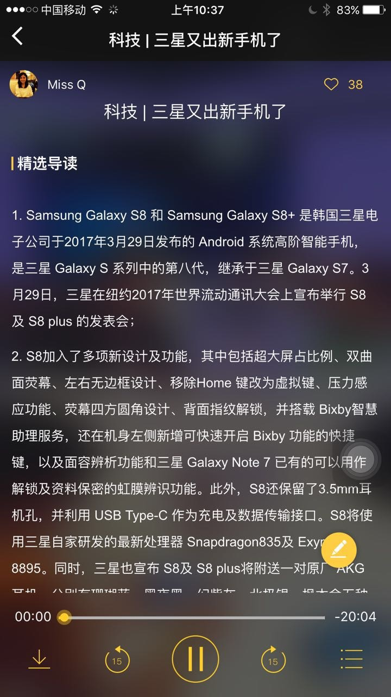

问题特征：IOS用户；4G/WiFi下均无法播放。
解决方案：打开【设置】→【通用】→【语言与地区】，选一个别的语言。之后重新打开App（双击Home然后上滑App）。正常了以后可以再把语言切换回来。
截图：
问题特征：播放页音频显示已下载，但无法播放，或播放到一半无法播放
解决方案：这个问题是在网不好的情况下，音频下载不完整导致的。可以尝试将已下载的该音频删除，在较好的网络下重新下载。或直接在线听。
截图：
问题特征：Android用户；WiFi下无法播放，4G可以。
解决方案：用户使用的Wifi网络无法连接服务器，暂时的解决方案只有更换WiFi或使用4G。需询问用户所在的地理位置。
截图：